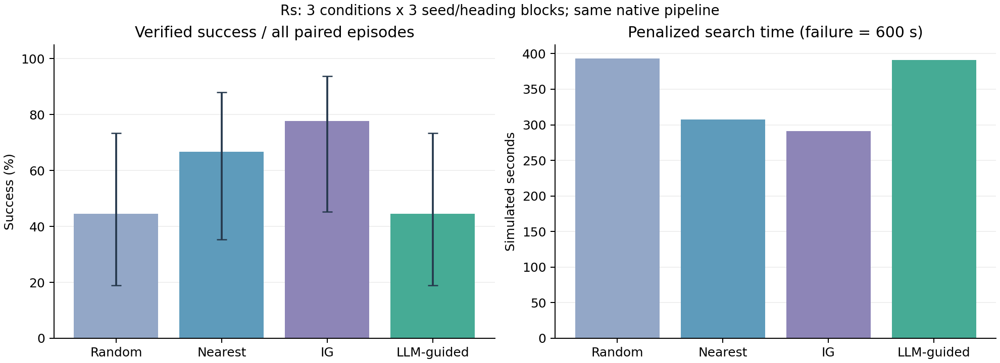

查看 9 组逐任务结果、真实轨迹、失败分布与 LLM 使用量 →
FRONTIER / PAIRED NATIVE BENCHMARK
目前的搜索表现
已完成 · 36 / 36 回合 · 完整配对 9 / 9 组
同一 Gibson Rs 房屋的原始、拥挤、动态障碍三种条件 × 3 组种子与起始朝向 × 四策略。原生 RGB-D、YOLO11s、Locobot、共享导航与恢复、独立近距离停稳验收。当前采用 1.1 扩展与 0.65 m 已验证初始化区域。
Random4/944.4% 成功
Nearest6/966.7% 成功
Information Gain7/977.8% 成功
LLM-guided4/944.4% 成功
配对主结果
主表只包含四策略都已结束的配对组，避免运行先后造成偏差。成功分母包括全部失败。失败计罚时间统一为 600 s；成功耗时与路程需结合成功样本数阅读。

导出 SVG 图
策略间配对差异
A − B：成功率差为百分点；计罚时间差为秒，负值表示 A 更快。区间按条件分层、以种子/朝向配对组重采样；成功差异的精确 McNemar 检验对六个比较做 Holm 校正。小样本区间不能代表不同房屋的泛化不确定性。
逐回合结果与证据
运行进度与口径
每个组合只运行一次，没有成功筛选或失败重试。所有终止结果均保存。四策略共享起点、目标、感知、控制、观察、恢复和预算；目标真值与全图可达性只用于隔离的预检查和终止验收。
Rs 几何与目标位置固定；种子本身不生成新房屋。三个预先固定的初始朝向使观测与任务有所变化。Nearest、IG 和检测器在相同输入下确定，LLM 服务端不能由本地种子保证重复。3 个并发工作进程共享本机资源，计算墙钟单独保存在 CSV/JSON 中，不作为单机器人独占硬件的延迟比较。
冻结配置 · 完整统计 JSON · 逐回合 CSV · 隔离可达性预检查
引擎指纹：bbd90a237a14b60bdddcd8e9f32524ea350ada88b94d34028f34caa2fd0140a1。更新时间：2026-10-18T16:16:06.347932+00:00。